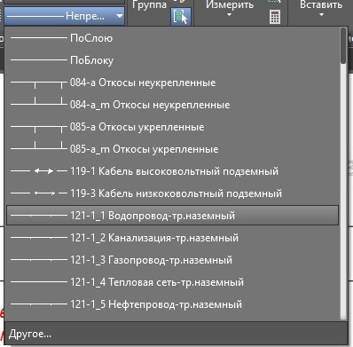
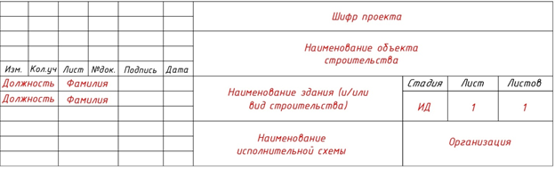

В чем залог успеха исполнительной схемы

Что такое исполнительная схема
Для начала посмотрите видео, в котором подробно рассказали про исполнительные схемы и наглядно показали, как их оформлять.
Источник и ограничения: видеоблок платформы не содержит открытого адреса файла.
Исполнительная схема (ИС) – это отражение выполненных работ с натуры на чертеже. Необходимо отнестись к формированию исполнительных схем ответственно, так как они являются основным подтверждением объема выполненных работ.
ИС – одна из главных составляющих исполнительной документации. Именно она отражает наглядно объем и качество выполненных работ.
Почему красивые и правильные схемы – залог успешной защиты объемов
Рассмотрим пример выполнения реальных исполнительных схем на разработку котлована. Одна и та же работа, технология, схожие объемы, но совершенно разный вид и впечатление.
Смотрите ниже разные варианты исполнения схемы на котлован и экспертную оценку к ним.
Встроенный материал · статическое представление
Исходная страница. Проверка ответов и анимация работают только онлайн.

Схема 1 не несет в себе никакой информации, не соответствует реальной картине на объекте. Такие схемы ведут к незамедлительному отказу в проверке и приемке объемов выполненных работ.
Несмотря на технические ошибки Схемы 2, она производит положительное впечатление, т.к. на ней указаны основные данные, которые могут быть проверены заказчиком и доработаны исполнителем.
На что стоит обратить внимание:
- Шрифты. Используйте один и тот же шрифт на схемах. Это делает ее визуально грамотнее и упрощает чтение. GOST, ISOCPEUR, СПДС – это топографические шрифты, которые будут визуально украшать схему, т.к. до перехода в графические программы именно топографическими шрифтами заполняли схемы и подписывали штампы.
- Высота текста. Основные данные (отметки, высоты, отклонения) должны быть одинаковой высоты. Не стоит делать акцент на каких-либо данных.
- Размерные линии. Стрелки линий необходимо обозначать двойной засечкой, учитывать размер засечки в композиции всей схемы (она не должна быть больше текста, но и не должна быть слишком маленькой и незаметной)
- Типы линий, обозначение материалов. Условное обозначение откосов, материалов (песок, щебень, бетон и т.п.) дополняет визуально исполнительную схему и упрощает её чтение. Для дополнительных типов линий можно использовать модуль GK500 (см. ниже)

Внешний вид исполнительной схемы играет важную роль при сдаче выполненных объемов работ.

Кто подписывает исполнительную схему, правильное заполнение штампа
Согласно ГОСТ Р 51872-2024. штамп исполнительных схем принимается по ГОСТ Р 21.101-2020.

Исполнительные схемы нумеруются последовательно. Наименование лучше записывать созвучно с АОСР к которому прилагается сама схема. Для обозначения схем, которые касаются ж/б или металлических конструкций необходимо прописать оси, в которых находится предъявляемый элемент. Это поможет при делении конструкции на захватки, на которые оформляется ИД. Если предъявляется участок трассы нефтепровода, газопровода – указывается ПК, для кабельных линий – точки (от т. А до т. Б), или МП. Данные точки должны быть отражены и на самой схеме.
Подписывают ИС согласно ГОСТ 51872-2019 руководитель и исполнитель геодезических и строительных работ. На них должен быть создан приказ организации
Наименование объекта строительства прописывается полностью согласно договору или наименованию РД.
Штамп – это «имя документа», его необходимо правильно заполнить, чтобы избежать замечаний.
На ИС необходимо указывать фактические геометрические параметры предъявляемых элементов. Это ускорит проверку ИС и сэкономит время на корректировке документации.
Примеры основных схем указаны в ГОСТ Р 51872-2024. Для тех схем, примеры которых отсутствуют в ГОСТ, правила оформления не меняются. Должны быть указаны отклонения, проектные и фактические размеры и высотные отметки.
Основные правила выполнения ИС:
- ИС должна отражать факт выполненных работ – визуально и в геометрических параметрах.
- Размерные линии должны быть выставлены так, чтобы без использования графических программ можно было вычислить объем предъявленной конструкции.
- На ИС необходимо указать расчет выполненных объемов работ
- Необходимо указывать проектные и фактические отметки.
- Условные обозначения должны отражать все условные обозначения, указанные на схемах
- Указывать нормативный документ и отклонения, относящиеся к предъявляемой конструкции (СП, ГОСТ, ВСН с указанием пункта документа)
- Указывать систему координат, систему высот, какая отметка принята за 0.000
- Оборудование, которым выполнялась съемка, номер поверки и дата
Готовы проверить знания по теме урока? :) Не бойтесь практиковаться, ведь даже если вы ответили неверно, система подскажет правильный ответ и вы его обязательно запомните.
Примечание на 24.09.2026. ГОСТ Р 21.101-2020 заменён ГОСТ Р 21.101-2026 с 01.04.2026 по карточкам Росстандарта: редакция 2020, редакция 2026. Исходный учебный текст сохранён.
Требует уточнения на 24.09.2026. Обозначение «ГОСТ 51872-2019» из исходного урока не найдено точным совпадением в поиске Росстандарта. Проверьте исходный документ перед применением; учебный текст не исправлялся.
{kind=link}
{kind=link}